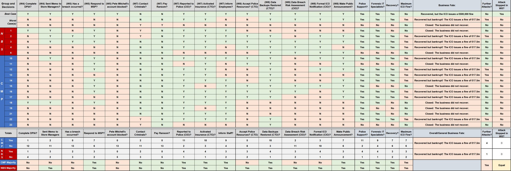

Board-level conclusion
This is not only a technical recovery issue. The response must connect cyber security strategy, governance, supplier oversight, legal readiness, staff communication and investment decisions.
A concise briefing for Sportetitive’s leadership, setting out the business impact, control failures, response priorities and CIO-led implementation direction.
Sportetitive’s ransomware incident combined social engineering, supplier trust, missing MFA, excessive privileged access, weak monitoring and legacy POS constraints that prevented modern controls from being deployed cleanly.
This is not only a technical recovery issue. The response must connect cyber security strategy, governance, supplier oversight, legal readiness, staff communication and investment decisions.
The briefing is split into focused pages so directors, technical leads and the owner can move quickly from the executive picture to the controls and delivery plan.
Mind-map view of preparation, detection, containment, recovery, communications and post-incident learning.
02Attack-path mapping with the controls that interrupt reconnaissance, access, credential theft, movement and impact.
03Phase-wise CIO delivery plan connecting governance, budget, architecture, supplier risk and board reporting.
The sequence below presents the confirmed attack path in board-level terms: initial targeting, compromise, ransomware execution, data-breach discovery and recovery.
LinkedIn activity gives attackers useful names, relationships and context for social engineering.
A convincing CEO-style email directs the technician to a fake survey domain.
Keylogger activity captures domain administrator credentials, enabling lateral movement.
Web services fail, files are encrypted and the IT team identifies the ransomware incident.
Personal data exposure is confirmed and the CIO submits formal notification to the ICO.

Technical recovery can still fail at board level if data protection decisions, DPIAs, stakeholder communications and risk documentation are weak.
These public sources support the cyber resilience recommendations and provide recognised guidance for Zero Trust, ransomware mitigation, attack mapping and breach notification.
NIST SP 800-207 describes Zero Trust Architecture as applying zero trust principles to enterprise infrastructure, workflows and access policies.
NCSC guidance recommends defence-in-depth, MFA, backup protection, preparation and containment steps for malware and ransomware incidents.
MITRE ATT&CK T1486 describes adversaries encrypting data on target systems to interrupt availability and support extortion.
The ICO states that reportable personal data breaches must be reported without undue delay and within 72 hours where required.